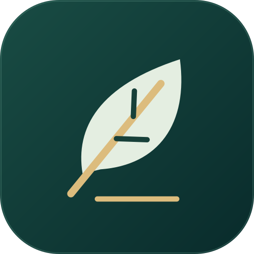
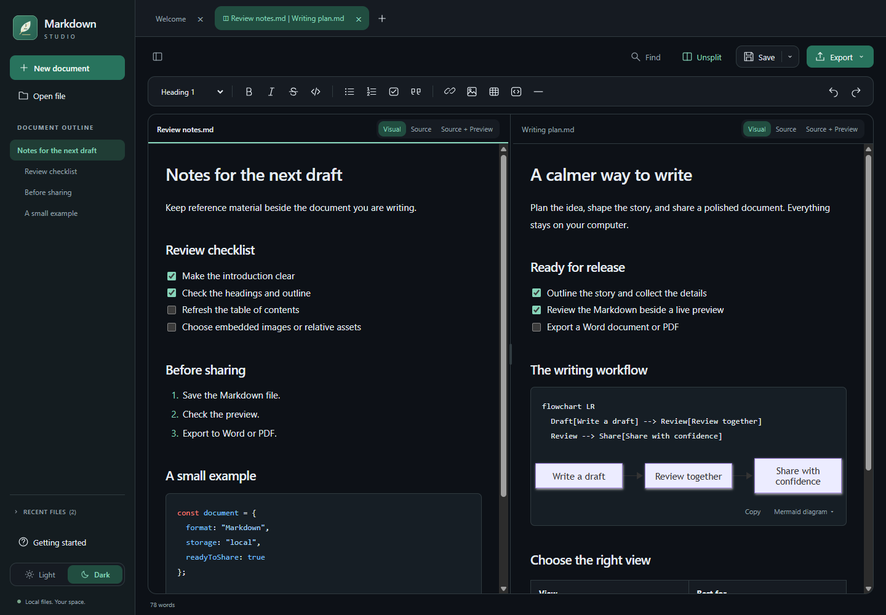

Featured project / 01

Markdown Studio
A calmer space for your words. My free Markdown editor for Windows brings visual writing, live preview, offline diagrams, and Word/PDF export together.
Explore Markdown Studio
Download the Windows installer
Unsigned installer. Windows or your browser may show a warning. Read installation guidance.
